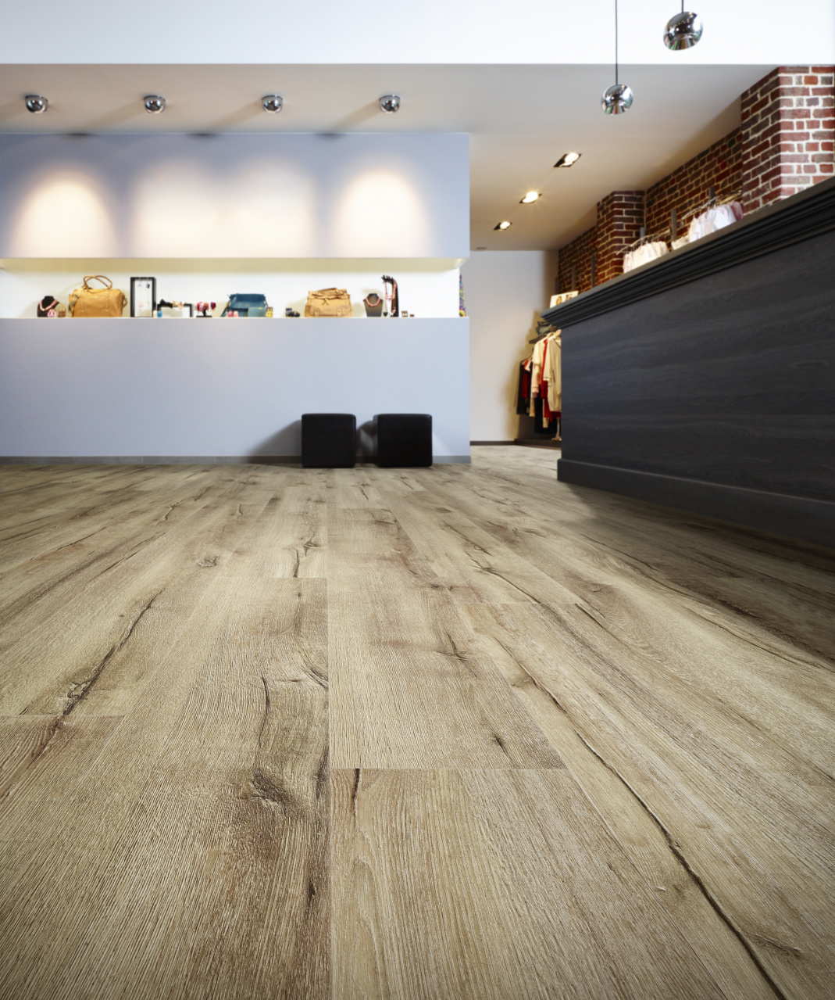

Кварц-винил. Свойства, особенности и применение.

Ресурсы для сайта я брал тут
Виды кварц-винила.
Для понимания,что такое кварц-винил,можно
коротко рассказать о нем.
Это полимерное влагостойкое напольное покрытие,
которое подходит для любого отапливаемого помещения.
Типов кварц-винила существует
несколько, но самые популярные это:
- клеевой LVT;
- замковый LVT;
Клеевой LVT.

Плюсы материала:
- Цена.Материал дешевле замкового аналога.
- Легкозаменяемость.
Можно легко заменить элемент прямо в центре комнаты.
- Множество цветов.
Можно выбрать расцветки для любого интеьера.
Минусы:
- Сложная укладка.
Рекомендуется укладка профессионаломю
- Идеальная поверхность.
Необходим наливной пол или закладка на пол фанеры,осб или цсп.
- Эксплуатацая только через 24 часа.
Можно ходить только после фикцации клея.
Замковый LVT.

Плюсы:
- Простота замены.
Можно зменить в любом доступном месте комнаты.
- Легкость монтажа.
Монтаж такой-же как и ламината.
- Не требует распила.
Режется канцелярским ножом.
- Необязательна укладка подложки.
Допускается монтаж без подложки.
Минусы:
- Требует ровное основание.
Имеются допуски до 2мм на 2м кв.
- Расширяется при нагреве более 28 C.
Допускается с тепоыми полами,но при нагреве
выше замки выходят из пазов.
- Расширяется на солнце.
Прямые солнечные лучи без тюля сильно нагревают материал и
он расширяется,выходя из замков. Тюль спасет ситуацию.